压缩：把视频变成潜变量
先用一个时空 tokenizer（VAE 一类）把像素压到低维连续空间，空间 8×、时间 4×。1920×1080 的 8 帧，压完只剩两个 240×135 的 latent——不压这一步，扩散模型在车端连一次前向都跑不起。
第 13 教学周 · 4 学时 / 180 分钟 —— 开头 6 分钟讲两件正在发生的事：视频扩散世界模型（渲染正在变成生成），和特斯拉 FSD v15 的 Reality View（每 222 ms 把世界重画一遍）。然后按你手上那件作品讲：把十二次课排成一条线，再把三件与作品收尾直接相关的事讲清楚：3.5 分钟怎么讲、数字怎么变成证据、智能交互接不上时怎么兜底。
今天开头先讲 6 分钟正在发生的变化：车机和机器人不再“画”场景，而是每一帧现生成一个场景。
特斯拉 FSD v15 的 Reality View 把中控屏换成了“实景渲染”：不是 3D 建模、不是游戏引擎、也不是 3DGS，而是车端每 36 分之一秒生成一帧画面。它背后的模型叫视频扩散世界模型（video diffusion world model）——一个用视频训练、能按条件“预测下一段画面”的生成模型。这一节只讲三件事：它为什么能成立、怎么训练与部署、以及它和 3DGS 各自的分工。
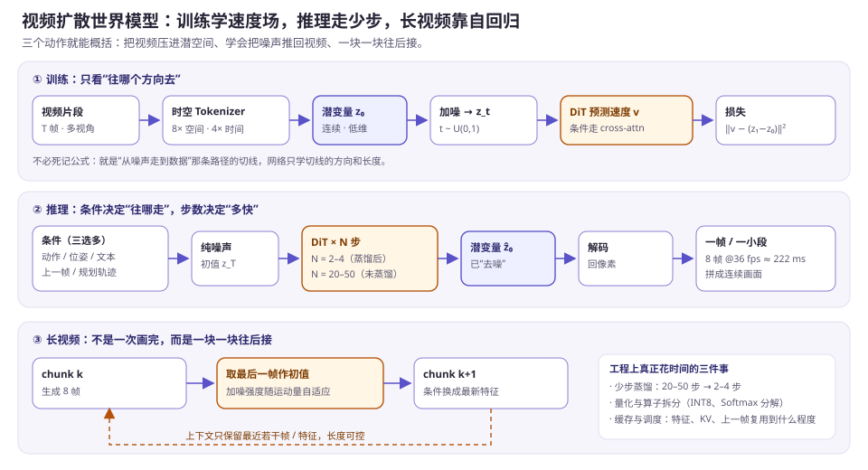
先用一个时空 tokenizer（VAE 一类）把像素压到低维连续空间，空间 8×、时间 4×。1920×1080 的 8 帧，压完只剩两个 240×135 的 latent——不压这一步，扩散模型在车端连一次前向都跑不起。
训练时给 latent 加噪，让 DiT 预测“从噪声走回数据”的方向与长度（flow matching 的速度场）。推理时从噪声出发，沿这个场走 2–4 步就到画面。相比传统 DDPM 的几十步，这是能上车的唯一现实路径。
长视频不是一次画完。每次生成一小段（如 8 帧），把最后一帧加噪当作下一段的起点，条件换成最新的感知特征。上下文只保留最近若干帧，长度才可控，画面也不会“越走越飘”。
| 阶段 | 做什么 | 关键点 |
|---|---|---|
| 数据与条件 | 车队/互联网视频 + 动作、位姿、文本、道路属性标注 | 条件必须可核验：动作来自底盘，位姿来自标定，不是猜的 |
| Tokenizer | 把视频压成连续 latent | 空间 8×、时间 4×；重建质量决定生成上限 |
| 训练 | 加噪 → DiT 预测速度场 → 回归损失 | 条件走 cross-attention / adaLN；多视角要加一致性约束 |
| 少步蒸馏 | 把 20–50 步的教师压成 2–4 步学生 | 一致性蒸馏或均值流；掉一点画质换 10 倍速度 |
| 推理 | 初值 + 条件 → N 步 → 解码 → 上屏 | 上一帧加噪强度随运动量自适应；8 帧 ≈ 222 ms 视频 |
| 端侧 | 量化、算子拆分、缓存、调度 | INT8；Softmax 用查表/多项式拆成多步；解码器常驻 SRAM |
| 概念 | 直觉 | 常见写法 |
|---|---|---|
| 前向加噪 | 沿一条直线，从“数据”走到“纯噪声”；走到哪一步由 t 决定 | z_t = (1−t)·z₀ + t·ε |
| 速度场 | 这条直线的方向与长度；网络学的就是它，不是像素 | v = ε − z₀ |
| 一步采样 | 知道方向，就往回走一小步；走 2–4 次就到画面 | z ← z − Δ·v_θ(z,t,c) |
| 条件注入 | 动作、位姿、文本不改主干形状，只当“外挂记忆”参与每层计算 | cross-attention / adaLN / 位置编码相加 |
| 自回归分块 | 只生成一小段，把末帧当下一段初值；上下文只留最近几帧 | p(z^{k+1} | z^k, c) |
| 少步蒸馏 | 让学生模型直接“跳”到终点附近，不再一步步走 | consistency / mean-flow distillation |
| 路线 | 代表 | 条件是什么 | 它保证不了什么 |
|---|---|---|---|
| 通用视频生成 | Sora、Veo | 文本 / 图像，追求好看与叙事 | 物理一致、动作可控、几何可测 |
| 驾驶世界模型 | GAIA-2、NVIDIA Cosmos | 自车动作、3D 框、道路属性、天气光照 | 长时一致性、极端场景的物理正确性 |
| 交互式世界模型 | Genie 3 | 逐帧的键盘/动作输入 | 真实感与可测量的几何（它是“可玩的模拟”） |
差别不在模型结构，而在条件：条件越“物理”，生成越像世界；条件越“语义”，生成越像视频。Reality View 属于第二类——它的条件里有一半来自真实感知，所以画出来的车道线和车实际看到的是同一套。
| 资料 | 看什么 |
|---|---|
| NVIDIA Cosmos 官方讲座（GTC 2025） | 世界基础模型怎么做出“物理可信”的合成视频，Predict / Transfer / Reason 三类能力 |
| Wayve GAIA-2 技术博客（含多段视频） | 驾驶世界模型的完整拆解：tokenizer + 潜空间扩散、动作条件、多视角一致 |
| Google DeepMind Genie 3 | 可实时交互的世界模型：输入动作，世界即时响应 |
| Google Veo 官方页 | 通用视频生成的上限：画质、镜头、音频 |
| Wayve GAIA-1 技术博客（9B） | 两段式结构的出处：6.5B 自回归世界模型 + 2.6B 视频扩散解码，含行为、天气、转向的大量视频 |
| NVIDIA Cosmos 官方主页 | 开放模型与工具链，想自己跑一遍可以从这里进 |
2026-11-21 刚推送给车主。课上只取 4 分钟：三段动图、一张架构图、一个 222 ms 对 11.1 ms 的对照。
这是刚才那个“视频世界模型”的量产落地版：不是生成一段好看的视频，而是在车里、在一颗只做整数运算的芯片上、每 36 分之一秒生成一帧，并且从一台车上根本不存在的相机（车顶正上方）看出去。官方原话只有一句：“New real-time generative driving visualization that continuously streams a view from an arbitrary virtual camera situated above your vehicle.”
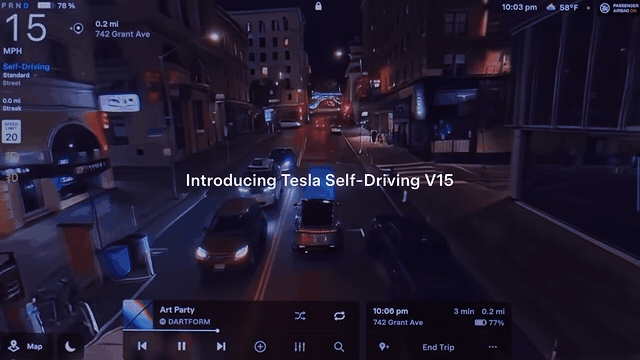
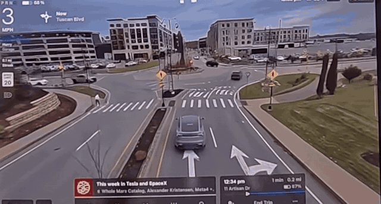
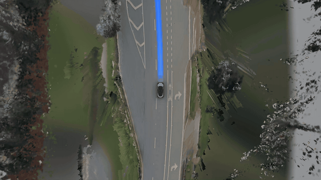

这块屏真正让人不安的，不是它画得不够真，而是它画得太真：真到你忘了它只是“车想干什么”的示意图，不是“世界是什么”的证据。它把 3DGS、帧预算、生成式幻觉、降级兜底四条线，第一次拧在了同一个产品里。
| 课上 4 分钟 | 做什么 |
|---|---|
| 0:00—0:50 | 放官方 36 秒，只问一句：“这是摄像头画面，还是游戏引擎？” |
| 0:50—2:10 | 三个数字：3B + 1B、半颗 TRIP、222 ms；说清“两个出口” |
| 2:10—2:50 | 现场算 8÷36、4÷18、0.222×16；和 VR 的 11.1 ms 对撞 |
| 2:50—3:40 | 模拟器只做两个动作：关 3D 几何辅助、勾幻觉注入 |
| 3:40—4:00 | 收在 3DGS：“你们学过它，它现在跑在车规芯片上，每 222 ms 重建一次。” |
十二次课铺得很散：硬件、全景、交互、性能、智能。今天要做的第一件事，是把它们收成一条能讲给别人听的线。
这门课的期末不是一张卷子，是一件你自己做的 WebXR 作品，加上一份说清楚它的文档，再加上一次3.5 分钟的现场演示。所以今天不是“再讲一章”，而是把十二次课重新排成一条线，再讲清三件与作品收尾直接相关的事。页首还加了一节新技术速览——视频扩散世界模型 + 特斯拉 FSD v15 的 Reality View，6 分钟（2 + 4），讲“渲染正在变成生成”。
| 时段 | 时长 | 内容 |
|---|---|---|
| 0:00—0:06 | 6′ | 开场 + 新技术速览：2′ 视频扩散世界模型（结论 + 三个动作）＋ 4′ FSD v15 Reality View（官方样片 + 两个出口 + 222 ms 对 11.1 ms）· 这一节的三样东西 · 与 12-02 验收的衔接 |
| 0:06—0:44 | 38′ | 回顾：一条主线（看 VR → 造空间 → 能交互 → 有目标 → 有边界 → 有度量 → 接智能）+ 十二次课时间轴 + 教材八章映射 + 六个案例 |
| 0:44—1:20 | 36′ | 新东西 · 智能：一句话怎么变成一段回答——LLM 智能交互的完整链路、动作白名单、四级降级（对应第 11 次课的主课内容） |
| 1:20—1:30 | 10′ | 课间（头显摘下放桌上，不放椅子上） |
| 1:30—2:05 | 35′ | 新东西 · 证据：把体验变成证据——A/B 对照怎么设计、JSON 里记什么、一句话怎么写得让人信 |
| 2:05—2:50 | 45′ | 新东西 · 路演：3.5 分钟怎么讲——四段结构、四个必答、三类翻车预案；两人一组现场掐表演练 |
| 2:50—3:00 | 10′ | 收束：封版规矩（只修错不加功能）· 12-02 流程 · 作品与文档两条提交线 |
| 合计 | 6 + 38 + 36 + 10 + 35 + 45 + 10 = 180′ | |
十二次课其实只在做一件事：把“我听说过 VR”变成“我做了一个戴着头显能走完的东西”
回头看，这门课每一段都在给作品加一层：先有空间（第 4 次课，一座故宫），再有镜头（第 5—6 次课，全景与多点漫游），然后能动手（第 7 次课，交互零件库），接着有目标、有边界（第 8—9 次课，叙事与可访问性），再往后是有度量（第 10 次课，13.9 毫秒与 10 万面），最后接上智能（第 11 次课，LLM 与降级）。
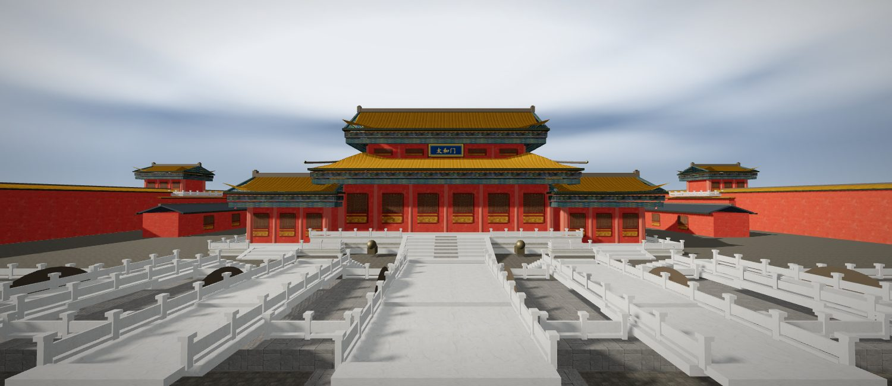
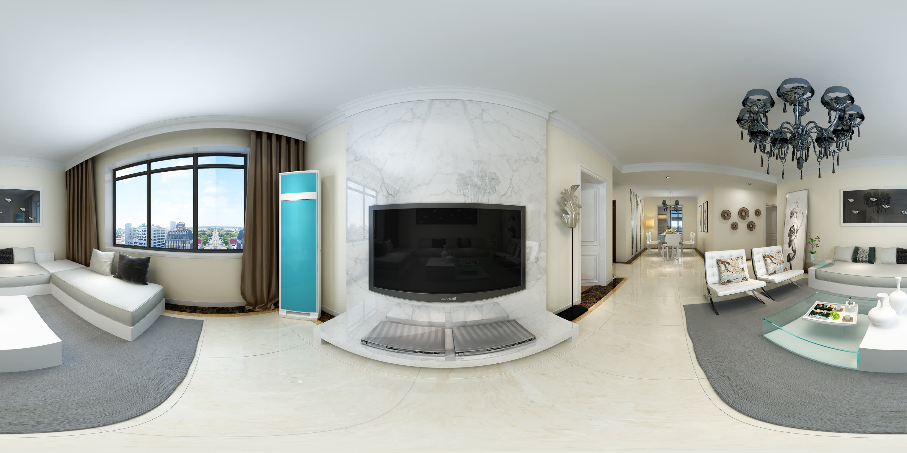
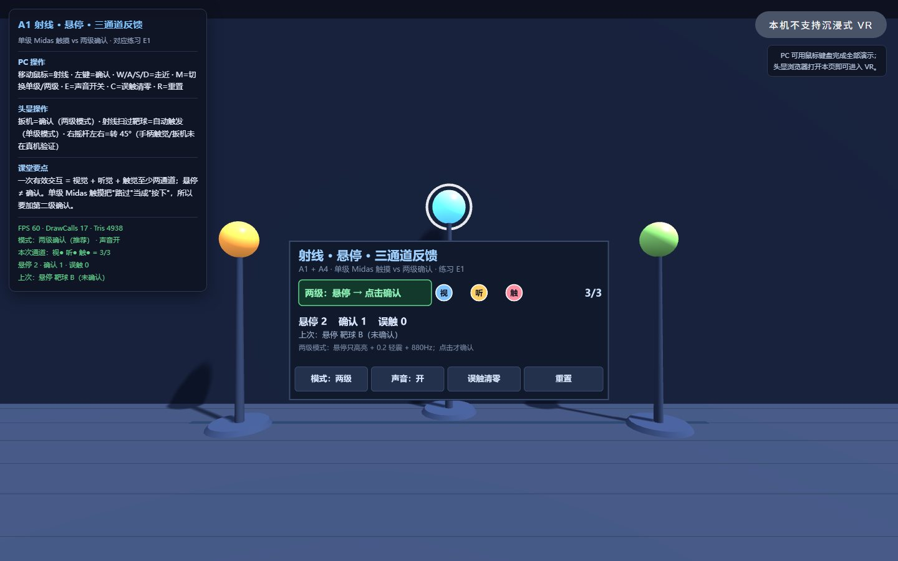
这条线也解释了为什么后半程要从 Unity 换成 WebXR：不是 Unity 不好，而是当天要能跑、当天要能改、当天要能发给老师看。教材讲的是引擎，课程要的是“你今天就能改一行、刷新就看见”的回路。
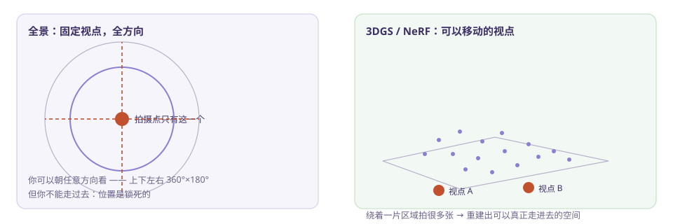
不是十二个知识点，是十二个交付物的累积——到 12-02，它们要合成一件作品和一份文档
| 次 | 日期 | 主题 | 你交了什么 |
|---|---|---|---|
| 1 | 09-02 | 概论：VR 是什么、这门课怎么走 | — |
| 2 | 09-09 | 关键技术：立体显示，以及“为什么会晕” | — |
| 3 | 09-16 | 硬件设备：头显里到底有什么 | — |
| 4 | 09-23 | 用 WebXR 生成一座故宫 | 故宫场景（上机） |
| 5 | 09-30 | 三维全景（上）：投影与漫游器 | 全景漫游器 |
| 6 | 10-14 | 三维全景（下）：节点、边、多点漫游 | 多点漫游 |
| 7 | 10-21 | 交互零件库：九个零件 | M1 选题一页纸 + 课后作业（10-27 23:59） |
| 8 | 10-28 | 交互进阶 + 开源模型资产管线 | 课堂作业 3（一页版） |
| 9 | 11-11 | 路要通、退得出、谁都点得到 | M3 主流程可玩（硬门槛） |
| 10 | 11-18 | 世界在看什么样的 VR | M4′ 作品对标一页纸 |
| 11 | 11-25 | 让作品会说话、能被度量（今天） | M5 功能封版（作品 + 智能模块 + 体验 JSON） |
| 12 | 12-02 | 结课：作品路演与验收 | 作品文件（11-25 前交）+ Word 文档（当天前两节） |
三个转折点值得记住：第 4 次课把工具从 Unity 换成 WebXR（“今天就能改”的回路）；第 7 次课把“交互”拆成九个可单独验证的零件（于是你能说清自己缺哪一块）；第 10 次课把“前沿”落回到两个硬数字（13.9 毫秒一帧、10 万面三角面）。
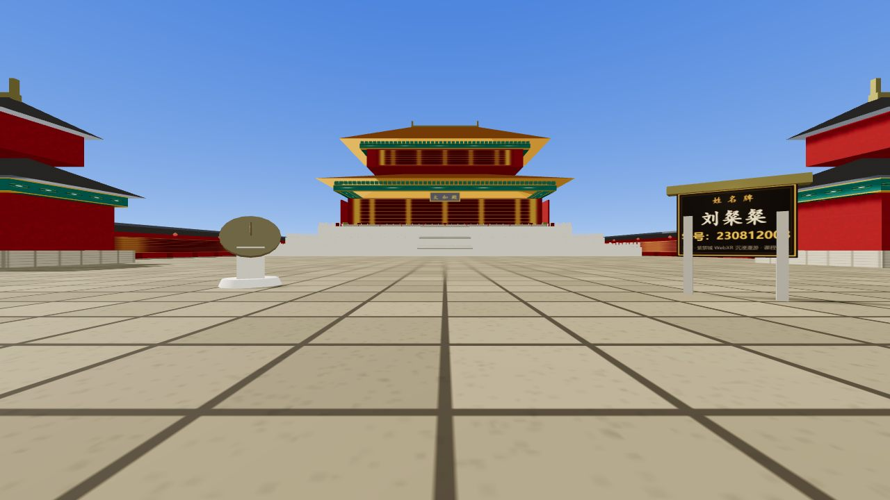
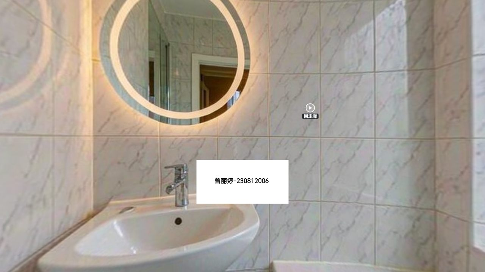
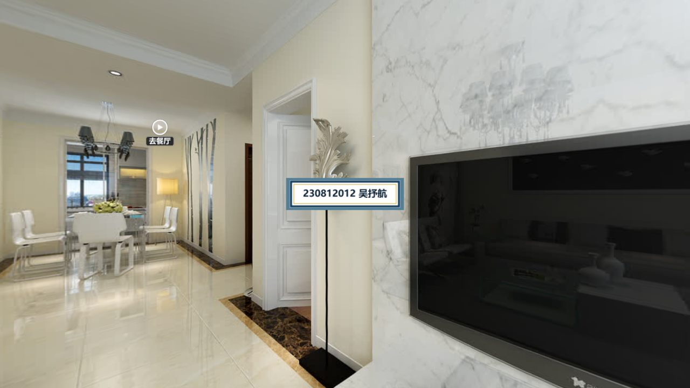
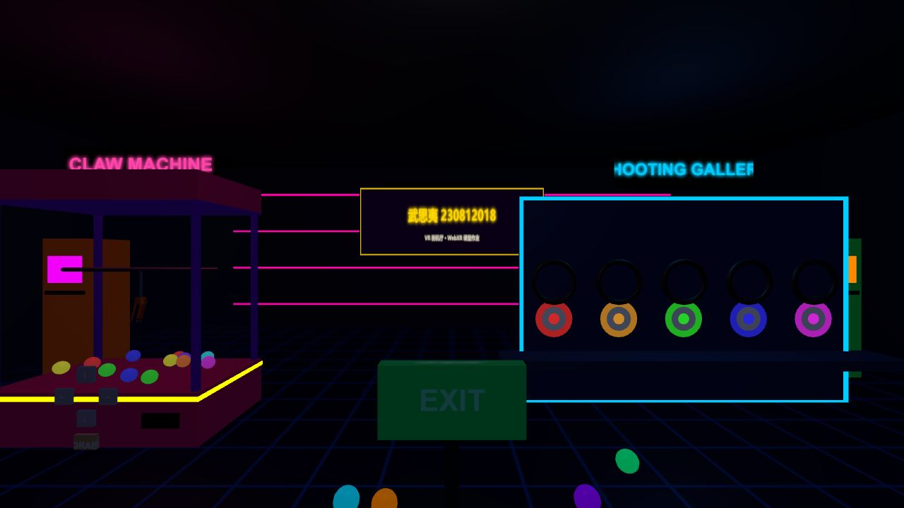
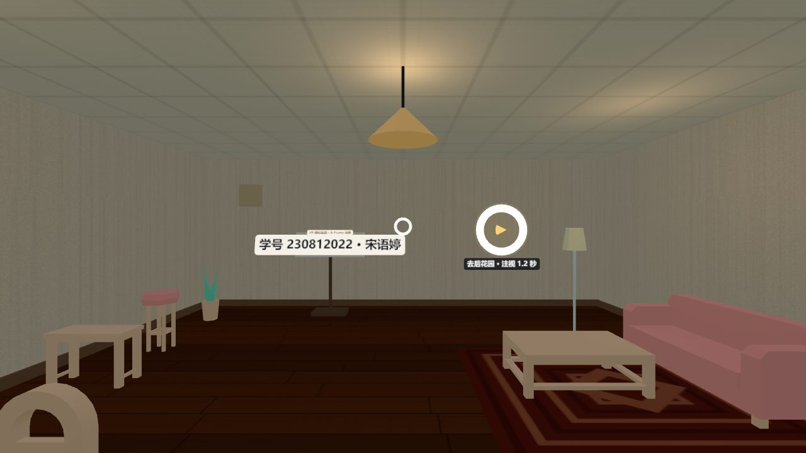
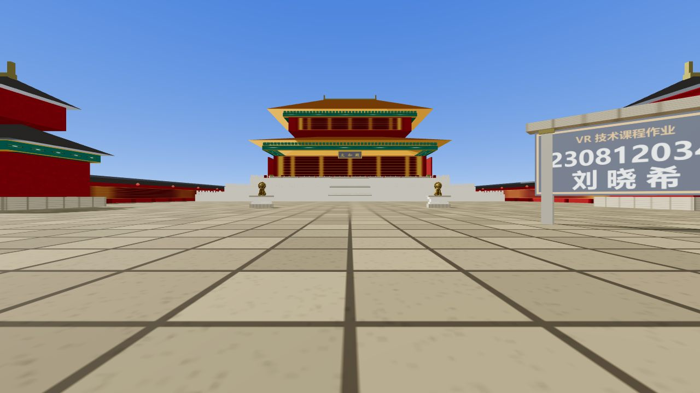
站内已有的作品封面（assets/vr-2026/student/works/）。你交上去的作品，最终也会以这样的封面出现在展示区：学生作品展示 →
同一个概念，教材用 Unity 演示，课程用浏览器演示——换的是工具，不是知识
期初的课程大纲把教材八章逐条对到了课次上。十二次课走完回看，这张映射表仍然成立，只有两处调整：第 6 章（Unity 开发基础）改写成 WebXR 作品工程，第 7 章（网络应用）落到第 11 次课的 LLM NPC。
| 章 | 教材内容 | 课程落点 | 这一章在作品里对应什么 |
|---|---|---|---|
| 1 | 概论 | 第 1 次课 | “为什么是 VR，不是 3D 网页” |
| 2 | 关键技术（立体显示、跟踪、渲染） | 第 2 次课 + 第 10 次课 | 双眼视差、6DoF、13.9 ms |
| 3 | 硬件设备 | 第 3 次课 | 头显、手柄、定位、串流 |
| 4 | 开发常用软件 | 第 4 次课 | 引擎与 WebXR：两条工具链 |
| 5 | 三维全景 | 第 5—6 次课 | 球面投影、热点、节点与边 |
| 6 | Unity 开发基础 | 第 7—9 次课（改写为 WebXR） | 场景、交互、状态机、可访问性 |
| 7 | Unity 网络应用（Socket / 数据库 / LLM） | 第 11 次课 | HTTP + SSE、动作白名单、降级 |
| 8 | AR（Vuforia） | 案例 05 + 加分项 | immersive-ar 入口与模拟跟踪 |
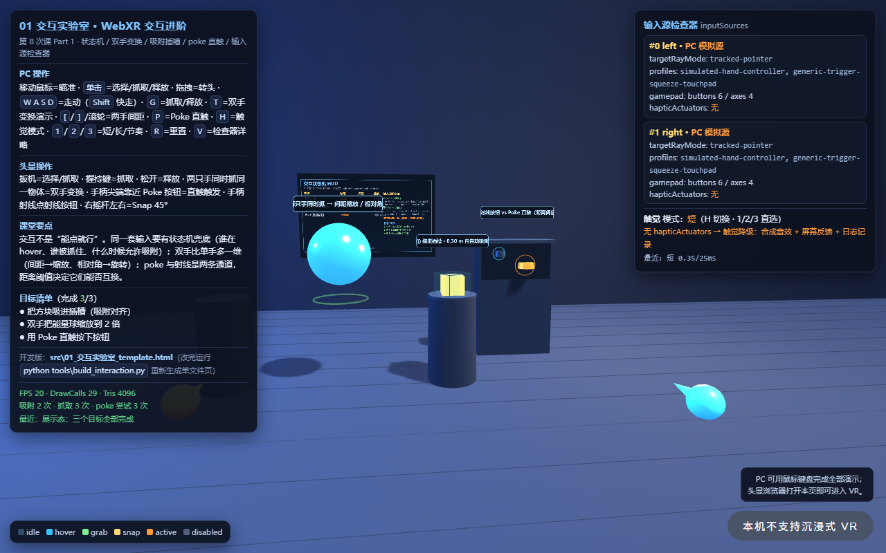
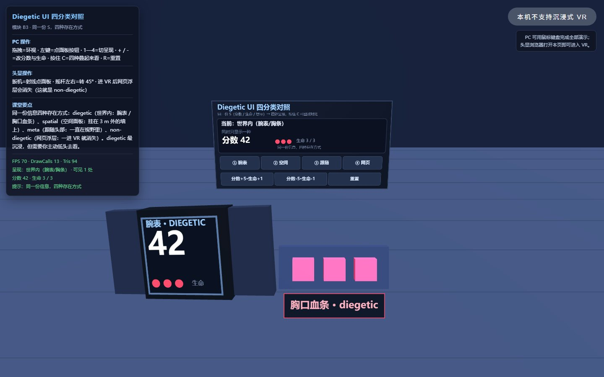
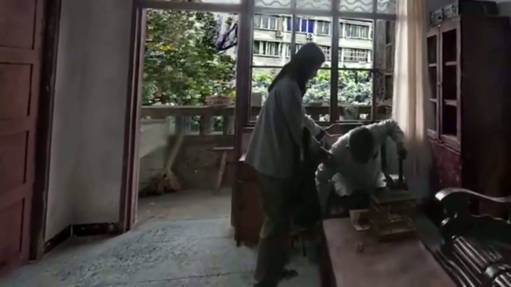
案例不是“给你抄的模板”，是“给你对照的样本”——你的作品至少要在其中一个维度上达到它们的水平
immersive-ar 入口、平面跟踪与模拟跟踪降级；文物信息中未知项标【待补充】。它示范的是“AR 怎么接、以及不编造”。六个案例合起来，正好是一份“作品该有的样子”的清单：空间 + 叙事 + 手感 + 度量 + AR + 智能。你的作品不一定要六项全占，但至少两项要立得住，并且能说清另外四项为什么不做。
一条不过 → 记“待整改”，3 个工作日内补交、上限“合格”、不进优秀推荐；量规分再高也没用
这张表和 12-02 的验收表同一口径（权威版见 第 12 次课页与 期末任务书）。今天逐条对一遍，是因为没过的项目，从今天到 12-02 只够修、不够重做。
| # | 门槛 | 怎么算“过” |
|---|---|---|
| 1 | 课堂作业 | 各写一段描述性说明：做了什么 / 用了什么技术 / 遇到什么 / 怎么解决，写进 Word 文档 |
| 2 | 方案已确认 | 微信发教师并得到确认；不少于 10 种交互 + 必须有模型资产 |
| 3 | 能进能退 | 进入 → 走完主流程 → 三条退出路至少一条走通，并报出用时 |
| 4 | 零外部网络依赖 | 断网可跑、无 CDN；依赖同目录或内联 |
| 5 | 无报错 | 控制台没有红字；主流程连续走两遍不崩 |
| 6 | 为什么必须 VR | 至少一处只有 6DoF 或立体才成立，并在 README 里写清楚 |
| 7 | ≥10 种交互 + 模型资产 | PC 与 VR 两端都能走完；模型是自建或合规引入的资产 |
| 8 | 有目标、有反馈、进度可见 | 状态集中在一个 S，window.XX.S 能查 |
| 9 | 舒适四项 | 默认传送 + Snap 45° · 隧道遮罩 · 眼高可调 · 一键重置 + 10 分钟休息提示 |
| 10 | 性能 | FPS / 帧时间 / DrawCall / 三角面面板；三角面 ≤10 万；一处前后对照；读数与 HUD 一致 |
| 11 | 可访问性与诚实 | 坐姿 / 单手 / 注视至少两条通路；不确定的写【待补充】 |
三条退出路只写没测。现场必须真的点一次，并报出“从按下到回到主页用了多久”。
断网白屏、控制台一片红。检查 <script src="http…">；three.js 放同目录。
window.XX.S 是 undefined状态散在十几个变量里。把状态收进一个对象再挂到 window 上。
只做了传送，没做 Snap、隧道、重置、休息提示。四项是“与”不是“或”。
“优化了性能”但只有一个数。改前改后各记一次，才算证据。
面板写 60 FPS，HUD 写 42。验收会同时看两处——不一致按“读数不可信”处理。
门槛全过之后，量规才决定优秀/良好/中等/合格；功能完备一项 25 分，抵得上“美观 + 交互”两项
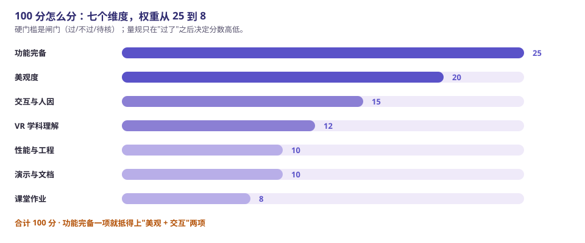
| 维度 | 权重 | 主要看什么 |
|---|---|---|
| 功能完备 | 25 | 主流程能不能从头走到尾；10 种交互是否真的可用；有无半成品按钮 |
| 美观度 | 20 | 场景、光照、界面的一致性与完成度；不是“花哨”，是“不粗糙” |
| 交互与人因 | 15 | 抓取/射线/传送是否顺手；舒适四项；有没有“反人类”的操作 |
| VR 学科理解 | 12 | “为什么必须 VR”说得清；6DoF、立体、空间叙事用得对 |
| 性能与工程 | 10 | 三角面预算、DrawCall、帧时间；对照与读数可信 |
| 演示与文档 | 10 | 3.5 分钟讲得清；README 与 Word 文档完整、诚实 |
| 课堂作业 | 8 | 随课作业是否按次交、是否写成“描述性说明” |
40 人 × 3.5 分钟 = 140 分钟，装进 180 分钟的课；到点举牌，停后内容不计分，但退出动作必须走完
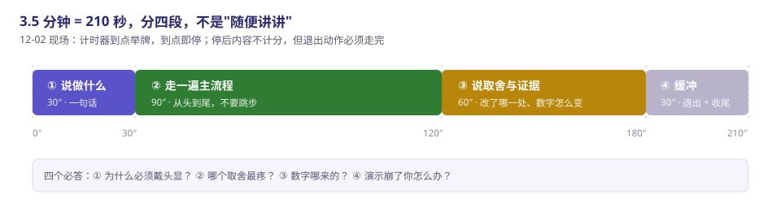
| 必答 | 答成什么样算过 | 答砸的样子 |
|---|---|---|
| 为什么必须戴头显 | 指着一处说：这里要 6DoF / 要双眼视差，鼠标替代不了 | “因为它是 VR 课” |
| 哪个取舍最疼 | 说清砍了什么、为什么砍、砍完还成不成立 | “时间不够，所以做得简单” |
| 数字哪来的 | 说出面板/JSON 里的具体字段与改前改后 | “大概六十帧吧” |
| 崩了怎么办 | 有录屏或截图兜底，能切到备用路径继续讲 | 当场重启、沉默三十秒 |
立刻切 PC 模式走同一套交互，并说：“VR 端刚才验过，现在用 PC 演示同一流程。”不要现场修设备超过 30 秒。
提前准备 60 秒录屏；卡住就播录屏，口述你在等什么。录屏要包含退出动作。
这本来就是设计的一部分：说“在线模型不可用，已降级离线知识库”，然后看它照常回答。降级能跑，是加分不是减分。
量规里“性能与工程”10 分、“演示与文档”10 分，考的都是同一件事：你的结论有没有数撑着
“体验更好了”不是结论，是感受。结论需要对照：同一批人、同一条任务、同一台机器，只改一个变量，其他一个字不动，再看指标怎么变。
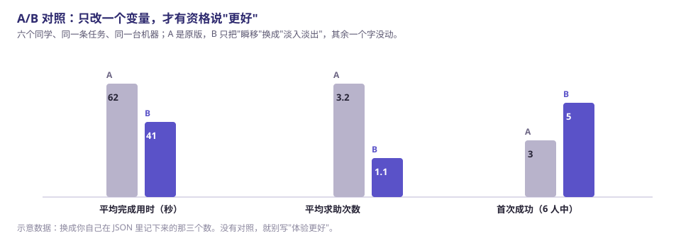
FPS 会跳，帧时间（ms）更稳。头显的预算是 13.9 ms/帧；你的场景在 PC 上多少、头显里多少，分开记。
三角面 ≤10 万是门槛；DrawCall 决定“同一画面要发多少次指令”。两个数一起看，才知道瓶颈在哪。
找 6 个人走同一条任务，记“第一次就成功”的人数。它比“平均分”更能暴露交互设计的问题。
传送方式、射线长度、提示出现时机——只选一个。同时改两个，就说不清是谁的功劳。
“从入口走到展台并拿到物件”，写死起点终点，不让测试者自由探索。
用时、求助次数、首次成功。写进 JSON：window.XX.S.experiment。
“把瞬移换成淡入淡出后，6 人平均用时从 62s 降到 41s，求助从 3.2 次降到 1.1 次。”一句话，三个数，一个变量。
这一节是第 11 次课的主课内容，这里只压成三件事
你打的那几个字，不是“直接发给模型”。它要先拼上最近 8 条历史、拼上人设，才作为一个请求发出去；回来的字是流式的，落屏时又变成打字机。知道这条链路，你才知道该在哪一段做降级。
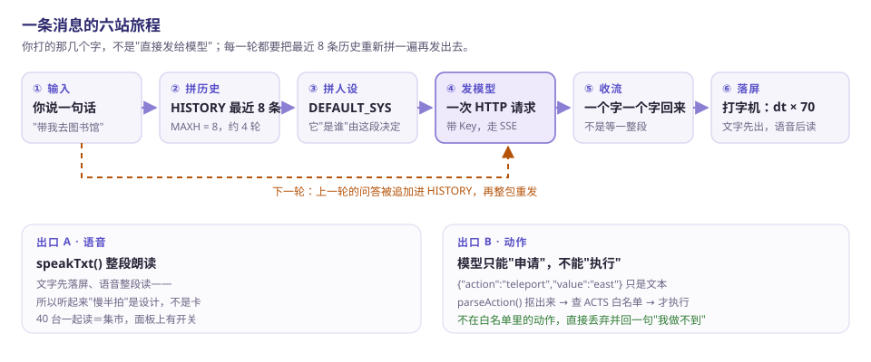
四种触发，四个去处。离线兜底是及格线，在线模型是加分项——因为 40 个人同时打在线接口，一定会有人撞上限流或超时。
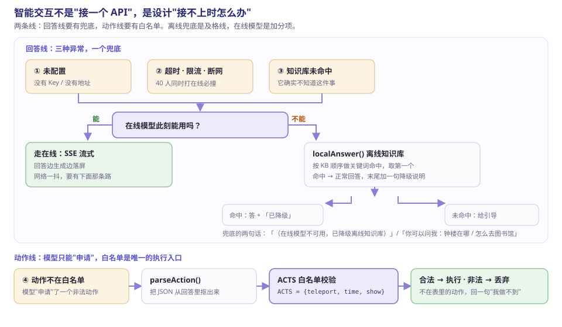
模型返回的 {"action":"teleport","value":"east"} 本质上只是文本。它必须经过解析与白名单校验，才能变成一次真的移动：
// 案例 06：模型能申请的动作，只有这些 var ACTS = { teleport: ['center', 'east', 'west'], time: ['day', 'night'], show: [0, 1, 2] }; // 校验：动作名不在表里、参数不在列表里，一律拒绝 if (!o.action || !ACTS[o.action]) return null; if (ACTS[o.action].indexOf(v) < 0) return null;
作品、文档、案例、工具，各在站点的哪个位置
| 资源 | 地址 | 用来干什么 |
|---|---|---|
| 现场案例 · Reality View | vr-2026-reality-view.html | 技术拆解专页：架构、六阶段、222 ms 时间账、3DGS 闭环、教学模拟器、讨论题与全部视频出处 |
| 新技术 · 视频世界模型 | #wm | 页首那一节：原理、流水线、6 条官方视频与资料 |
| 课程主页 | vr-2026.html | 十二次课的总入口、作业与通知 |
| 期末大作业任务书 | vr-2026-final-project.html | 提交物、目录规范、11 条门槛的完整原文 |
| 第 11 次课 | vr-2026-lesson11.html | 智能交互完整版 + 55 分钟工作室任务 |
| 第 12 次课 | vr-2026-lesson12.html | 路演组织、验收量规、分组与计时 |
| 六个课堂案例 | assets/vr-2026/cases/ | 对照样本：空间/叙事/手感/度量/AR/智能 |
| 演示库 d01–d18 | assets/vr-2026/demos/ | 单个技术点的最小演示 |
| 交互零件库 | assets/vr-2026/lab/ | 九个零件的独立页面 |
| 全景漫游 | assets/vr-2026/panorama/ | 投影、热点、节点与边 |
| 学生作品展示 | assets/vr-2026/student/ | 封面 + 作品页；提交格式参照这里 |
| 大作业展示区 | assets/vr-2026/final-works/ | 12-02 之后你的作品会出现在这里 |
| 作品自检 | assets/vr-2026/check/ | 按 11 条门槛逐项自查 |
| 论文模板（docx） | 下载模板 | 12-02 前两节课交的 Word 文档格式 |
| 第 10 次课 | vr-2026-lesson10.html | 威尼斯沉浸单元与 3DGS/4DGS 的技术参照 |
| 第 9 次课 | vr-2026-lesson9.html | 三条退出路、舒适四项、可访问性 |
| 第 8 次课 | vr-2026-lesson8.html | 交互状态机与模型资产管线 |
| 第 7 次课 | vr-2026-lesson7.html | M1 选题一页纸与九个零件 |
封版之后只修错、不加功能；作品和文档是两条独立的提交线，别混
今天之后，作品只修错、不加功能。新增模块不计分；现场验收看的是封版那一刻的状态。如果某个功能今天还跑不通，正确做法是把它藏起来或降级，而不是路演前一晚赶工——赶出来的模块，最容易在 3.5 分钟里当场崩。
压缩包微信发给教师，由教师统一上传网站（不用 FTP）。目录里要有 index.html、README.md、cover.jpg（1280×720）、xr-data.json；依赖放同目录，不引 CDN。
用已发布的大作业论文模板：封面、格式、课堂作业各一段、方案说明、README 段落、已知简化。后两节课集中展示作品。
| 时段 | 时长 | 发生什么 |
|---|---|---|
| 0:00—0:10 | 10′ | 开场：验收口径、分组、计时规则、四条安全规矩 |
| 0:10—1:20 | 70′ | A 轮：4 个验收点并行，每组 10 人路演 + 10 人互评 |
| 1:20—1:30 | 10′ | 课间 + A→B 换场 |
| 1:30—2:40 | 70′ | B 轮：换手，上一轮的互评员上台 |
| 2:40—2:55 | 15′ | 优秀作品集中复盘（4—5 人） |
| 2:55—3:00 | 5′ | 课程总结 · 展示区上线 · 达标名单 |
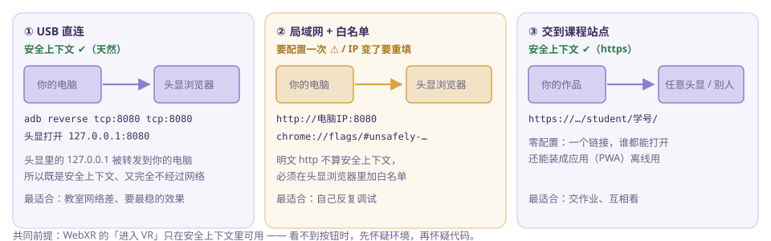